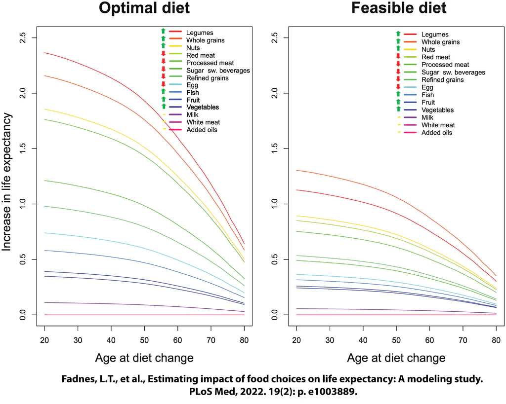

The Bean Boy Order of Operations
Legumes are potentially the HEALTHIEST addition I've made to my diet [1, 2]. My wife lovingly calls me "Bean Boy" because of my proclivity for beans. I've leaned into it.
This is my living (in-progress) document on healthy living — a personal framework built from the longevity research I find most convincing. It's what I actually try to follow, not medical advice.
The frameworkBean Boy SLEEPS well
Sleep
Good sleep is linked to lower dementia risk, better recovery, and better decision making.
- Consistently 8+ hours.
- Go to bed and wake up at the same time every night.
- Minimize sleep interruptions; treat apnea and other disorders.
Love
Strong bonds are linked to longevity.
- Maintain strong relationships with family and friends.
- Spend time on passion projects.
- Give generously.
Exercise
Exercise is one of the most potent health tools we have.
- Get 8k+ steps per day.
- Strength train full body twice per week with progressive overload.
- Vigorous cardio 3+ times per week (minimum 20 min each, ideally 60–90).
- Stretch daily.
Engage your brain
- Read books daily.
- Meditate often.
- Learn new skills with progressive difficulty — progressive overload of the mind.
Plants
Eat whole plants across the rainbow — plus time in nature, which is linked to better mood and health outcomes.
- Avoid saturated fats (they raise ApoB and LDL — risk factors for heart disease).
- Eat high-fiber meals — legumes and whole grains. The more the better: fiber reduces blood sugar, decreases gut transit time, and shows benefits across hundreds of clinical trials.
- Consume foods rich in antioxidants: carotenoid-rich, polyphenol-rich, and vitamin C & E-rich foods.
- Get protein not attached to saturated fat (~1.5g per kg body weight per day) — legumes.
- Eat seeds (nuts for others) and fungi regularly for truly diverse polyphenol profiles.
- Eating across the "rainbow" with lots of diverse herbs and spices covers most nutrients, carotenoids, and polyphenols.
Stop health detractors
- Avoid overeating, excess body fat, smoking, alcohol, unprotected sun exposure, air pollution, processed meats, ultra-processed foods, high-AGE cooking methods, trans fats, red meat, pesticides/herbicides known to cause cancer, VOCs, and recreational drugs.
Four steps, in order
The short version is the whole thing — click any step for the details.
Stop doing things known to be bad
- Do not smoke.
- Wear a mask to avoid virus exposure and air pollution.
- Do not drink alcohol.
- Avoid high-sodium intake — sodium raises blood pressure and increases cardiac events. Increasing potassium chloride intake alongside sodium shows better health outcomes; even 50/50 salt-substitute products have a massive positive impact.
- Avoid processed foods and trans fats. Ultra-processed foods are linked to worse health outcomes; processed meats are a carcinogen (2 bacon slices/day ≈ +18% cancer risk); trans fats are banned but occur naturally in some meats.
Avoid high-AGE cooking methods
Advanced glycation end products (AGEs) are harmful compounds formed when proteins or fats combine with sugars during cooking, especially under high, dry heat. They accumulate in tissues over time and contribute to oxidative stress, inflammation, and accelerated aging. Reducing dietary AGE intake is linked to lower risk of chronic conditions like diabetes, kidney disease, and cardiovascular problems. Cooking methods ranked from highest to lowest AGE creation:
- Grilling/broiling — direct, very high dry heat chars the surface, producing the most AGEs.
- Roasting/baking — prolonged dry oven heat browns proteins and fats.
- Frying (pan or deep) — high oil temperatures and dryness, slightly less than open flame.
- Sautéing — moderate, thanks to shorter exposure time.
- Microwaving — short cooking times and moist conditions keep AGEs fairly low.
- Steaming — moist, lower-temperature heat.
- Boiling/poaching — water caps the temperature at ~212°F; wet environment minimizes AGEs.
- Raw — no heat, essentially no new AGE formation.
Avoid unprotected sun exposure
The sun's infrared radiation is beneficial; its UV radiation is harmful. My protocol:
- Avoid going out at peak-UV times of day; wear sun-protective clothes.
- Wear high-SPF sunscreen daily — minimum SPF 30, ideally 50+ — applied at least twice daily (morning and noon), even if mostly indoors. Use special sunscreen for outdoor activities.
- Choose broad-spectrum SPF chemicals that are not easily absorbed into the bloodstream: zinc-based, or bemotrizinol (not available in the US). Do not use spray sunscreens — the aerosol enters your lungs.
- Wear long sleeves and pants (clothes still let some radiation through), a large full-coverage hat, and UVA/UVB sunglasses.
- Spend time in the shade — but know that direct sun is only ~40% of your exposure; in the shade you still get ~60% of the radiation.
Eat diverse whole food plants
Focus on daily intakes of:
- Beans + Berries
- Greens + Grains
- Herbs + Spices
- B12 + Creatine + Omega-3 + D3
More to come for this section.

Fadnes, L.T., et al., Estimating impact of food choices on life expectancy: A modeling study. PLoS Med, 2022. 19(2): e1003889. Note what's at the top of both charts: legumes. Bean Boy vindicated.
Move frequently
- Frequent movement is more valuable than any other type of exercise. Get at least 6k steps per day — the more the better. Every extra 2k steps per day correlates with better health outcomes (the effect tapers off around 16k).
- Cardio, with VO2 max as the metric to watch: do vigorous cardio you enjoy and can sustain.
- Resistance training: muscle mass is extremely important for healthy aging — metabolic, balance, confidence, and bone benefits, plus reduced injury risk. Strength train full body at least 2x/week (3–4x is great), focusing on progressive overload: slightly more weight or slightly more reps each time. Don't get injured — progress slowly but steadily.
Sleep well
- Consistency beats optimization: go to bed and wake up around the same time.
- Get 7–9 hours — shoot for the amount that leaves you feeling most rested.
More to come on this topic.